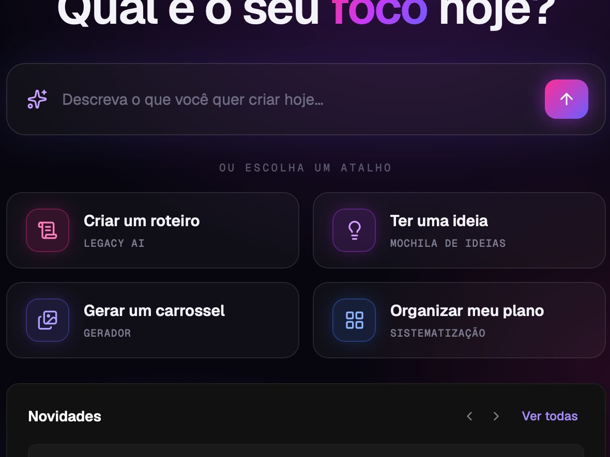
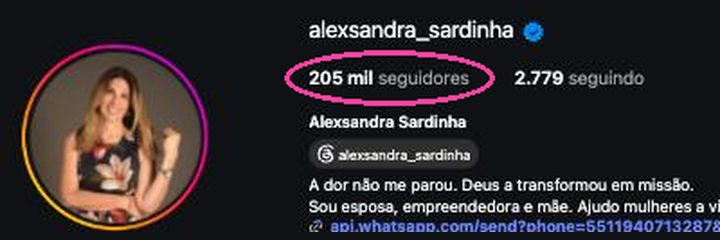
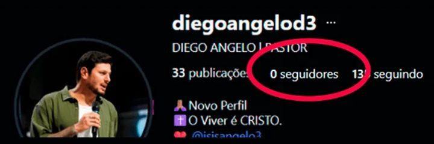
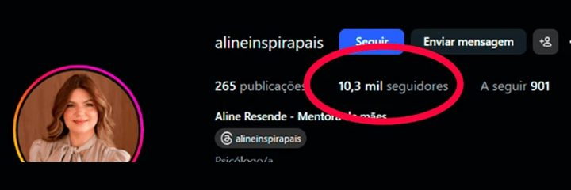
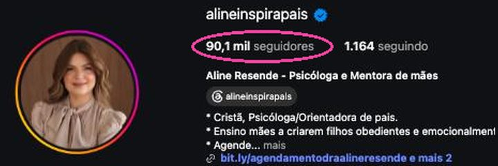
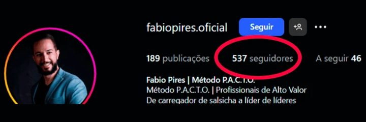
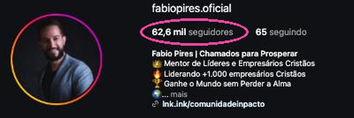
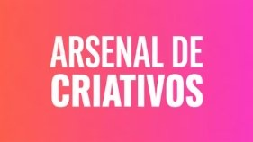

Promov
A maior empresa de estratégia digital do segmento cristão da América Latina.
+10 anosno segmento cristão
180 milalunos
63países
Quem te mandou quer decidir isto com você.

Uma plataforma exclusiva da Promov que traduz a mensagem de quem te mandou para o digital: saber o que postar toda semana e escrever conteúdo que ensina, com a própria voz.
Quem te mandou tem uma mensagem que ajuda pessoas e quer traduzi-la para a tela, com constância.
O ano inteiro custa menos que 1 mês de uma agência pequena (elas cobram a partir de R$ 2 mil por mês). Dá para pagar em até 12x no cartão. A condição exata está com nossa equipe.
7 dias para testar. Se não for, o valor volta inteiro. É lei para compras pela internet.
Não é mentoria, não posta no lugar de quem te mandou e não promete números.
Fora da tela, a sua palavra já tem peso.
Toda semana, você sabe o que falar, escreve do seu jeito e posta com constância.
Eu sei muito. Mas, na hora de postar, eu travo.
Quem chega até aqui tem anos de estrada e uma mensagem que já transformou vidas. E quer que ela chegue a mais gente, e um dia vire curso, livro ou mentoria.
Sem estratégia: “Não sei por onde começar. E, quando começo, paro.”
Com a Legacy: Toda semana, a Mochila traz os assuntos em alta no Brasil, com o olhar cristão, para você adaptar à sua mensagem. E um quadro mostra o que falta: nada fica pela metade.
Sem estratégia: “Tenho medo de expor a minha mensagem do jeito errado. Às vezes, apago no dia seguinte.”
Com a Legacy: Cada roteiro segue as 10 camadas do método da Promov. Você sabe por que cada parte está ali, e posta com segurança.
Sem estratégia: “A IA escreve bonito, mas não sou eu.”
Com a Legacy: A Legacy parte do retrato do seu público e do seu jeito de falar. Você revisa cada palavra.
Sem estratégia: “Os cursos não falam a minha língua.”
Com a Legacy: O método foi feito para quem comunica com fé. Do tema ao exemplo, tudo no seu universo.
Você nunca mais começa do zero. Sabe o próximo passo.
Criamos uma mentora de exemplo, a Ana, que ajuda mães cristãs. Veja o passo a passo dela, nas telas reais da Legacy:
1 · Mapeamento — 5 respostas viraram um retrato completo de quem ela ajuda: dores, desejos, crenças e até as frases que esse público fala.
2 · Mochila de Ideias — os assuntos em alta no Brasil esta semana; ela escolheu um para adaptar à mensagem dela.
3 · Assistente de roteiros — uma frase virou ângulo, ganchos e roteiro.
4 · Construtor de roteiro — o roteiro em 10 camadas, com a explicação de cada uma.
5 · Carrossel — capa escolhida entre 5, lâminas prontas, exportado com as fotos.
6 · Formatos — 17 formatos para gravar, do lo-fi à entrevista.
7 · Aulas — o Método Conteúdo Pedagógico, em aulas, dentro da plataforma.
“Essas ferramentas… mastigado assim, é muito mais fácil da gente digerir e aplicar.”
Mais de 17 milhões de visualizações


Parabénsssss pelo resultado @Luciana Freire
Sensacional! ⚡
Uma dúvida: vc usou nossa IA roteirista pra escrever esse roteiro?
COM TODA CERTEZA!
A IA é maravilhosa
Ela me deu a base e eu fiz ajustes finos nos 2 roteiros.
Os 2 vídeos foram com a IA
Carrossel não pede câmera nem rosto. Os 3 primeiros foram feitos com a Legacy IA; o último, um reel, com o método que está nela:
Prints e capas reais, com o que fala de outras pessoas coberto. Resultado de quem aplicou; o seu depende da sua constância.
Tempos médios estimados pela equipe da Promov. No começo leva um pouco mais, até pegar o jeito.
Seguidores de cada um no Instagram.


Eles tiveram a mentoria da Promov, com gente ao lado. A Legacy não tem acompanhamento: põe o mesmo método na sua mão.






Seguidores no Instagram, antes e hoje. Resultados da mentoria da Promov, não da plataforma sozinha.
A maior empresa de estratégia digital do segmento cristão da América Latina.

Estrategista digital e sócio da Promov. Quem criou o método por trás da Legacy.

Pedro Victor, sócio da Promov e o maior DJ cristão do mundo.
Nos grandes palcosRadicais Livres · 60 mil pessoasFestival Promessas · Rede Globo · 20 mil pessoas
Sozinho, você trava. Com IA e Canva, a mensagem perde a essência. Com designer ou agência, você explica tudo e espera.
| O que você ganha | LLegacy IA | Sozinho | IA + Canva | Designer | Agência |
|---|---|---|---|---|---|
| Você sabe o que postarNa Legacy: assuntos em alta no Brasil, toda semana | ✓assuntos em alta no Brasil, toda semana | ✕ | ideias genéricas | ✕faz a arte do que você pedir | se você passar o briefing |
| Fala a língua do público cristão | ✓ | ✓ | só se você explicar toda vez | depende da pessoa | depende da equipe |
| Conteúdo que ensina, com método | ✓ | ✕ | se você souber pedir | ✕o texto é seu | depende da equipe |
| Continua sendo a sua voz | ✓ | ✓ | ✕troca as suas palavras | ✓usa o seu texto | muitas vezes, não |
| Constância sem depender de ninguém | ✓ | ✕ | ✕prazo e fila | ✕prazo e fila | |
| Faz e posta por vocêNa Legacy: quem posta é você | ✕quem posta é você | ✕ | ✕ | faz a arte, não posta | ✓ |
| Quanto custa | Assinatura anualcondição com quem te enviou | R$ 0mas o seu tempo, travado | ≈ R$ 135 por mês≈ R$ 1.620 por ano | a partir de R$ 50 por carrossel | a partir de R$ 2 mil por mês |
O designer faz a arte. A Legacy faz a arte e o conteúdo que ensina.
Um ano dessa ajuda, sempre pelo valor de entrada de cada serviço:
6 cursos inclusosmais de R$ 1.200 em cursos, pelo valor de entrada de cada um

Coleção Secreta dos CriativosPor dentro dos melhores criativos, para trazer ao seu conteúdo.✓ inclusocursos assim: a partir de R$ 197Quase R$ 9 mil por ano.
E ficou de fora o mais caro: o roteiro de cada semana. Com um roteirista (a partir de R$ 400 por roteiro), a conta passaria de R$ 28 mil.
Você não vai pagar nem perto disso.
O ano inteiro na Legacy custa menos que 1 mês de agência.
Quero saber a minha condiçãoTambém não entraram na conta: os assuntos em alta no Brasil toda semana, os formatos de vídeo, o quadro de produção, o assistente de iscas digitais e o social media (ele posta por você, e a Legacy não). A Legacy não faz no seu lugar: ela faz com você. A conta mostra quanto custaria pagar alguém por essa parte.
IA: páginas oficiais de preço. Designer: valor pago a freelancer numa vaga publicada. Copy, consultoria e roteiro: guias de preço de freelancers. Cursos: o Método Conteúdo Pedagógico pelo preço dele avulso; os outros, pelo guia de preço de cursos online da Hotmart. Contamos 48 semanas no ano (um mês de descanso). Sempre valores de entrada, nunca a média.
Na comparação: IA + Canva pelas páginas oficiais (IA ≈ R$ 100 e Canva R$ 35 por mês); designer e agência pelo menor valor de cada faixa.
Cada semana sem postar é uma mensagem que não chega a quem precisa dela.
Cada quadrado é uma semana do ano. Tirando um mês de descanso, com 5 conteúdos por semana, são 240 mensagens: 240 chances de alguém ouvir a palavra de que precisava. Isso é legado.
E tentar do mesmo jeito também custa: mais um curso que não fala a sua língua, mais uma segunda-feira de “agora eu começo”.
A plataforma inteira, com os assistentes de IA, as aulas do método e 6 cursos de bônus: o que custaria quase R$ 9 mil, por menos que 1 mês de agência.
Em até 12x no cartão, ou em 2 cartões. Outra forma de pagamento? Fale com nossa equipe.
Válida até .
Se não for para você, devolvemos 100% do valor. É o direito de arrependimento, garantido por lei para compras pela internet.
Quantas semanas mais a sua mensagem vai esperar?
Quero começar na LegacyNossa equipe te responde no WhatsApp com a condição e o link.
Você responde as 5 perguntas do mapeamento: a Legacy aprende quem você ajuda.
Você escolhe o primeiro tema e escreve o roteiro com ela. Não fez sentido? Avise dentro dos 7 dias.
Vai decidir com alguém? Quem decide junto merece ver o mesmo que você.
Mandar esta proposta Ela abre num resumo de 1 minuto, feito para quem não estava na conversa.O ChatGPT é genérico e não tem método. Ele não conhece quem você ajuda: a cada conversa você explica tudo de novo, e, se não souber pedir, o texto sai bonito, mas com a cara de todo mundo. A Legacy tem método: começa pelo retrato do seu público, traz os temas da semana com o olhar cristão e escreve cada roteiro nas 10 camadas do Método Conteúdo Pedagógico da Promov. O seu conteúdo ensina e prende, e você nunca começa do zero.
Por isso mesmo. O que mais consome tempo é decidir o que falar e começar do zero. Isso a Legacy entrega pronto. Você revisa, ajusta e posta.
Se você usa o WhatsApp, você usa a Legacy. Você escreve do jeito que fala, e ela pergunta, propõe e escreve junto. As aulas mostram cada passo.
Uma fração do que custaria contratar essa ajuda de outro jeito: o ano inteiro custa menos que 1 mês de agência (elas cobram a partir de R$ 2 mil por mês). A sua condição está com nossa equipe, e vale até .
Serve. A Legacy começa pelo retrato de quem você ajuda, não pelo tamanho do perfil. Com poucos seguidores, o que mais pesa é postar com constância, e é isso que ela põe na sua mão. Não prometemos números.
A assinatura é anual. Antes de você pagar, nossa equipe te explica como funciona a renovação.
Você tem 7 dias para testar. Se não for para você, devolvemos 100% do valor. É o direito de arrependimento, garantido por lei para compras pela internet.
Não tem acompanhamento nem consultoria: a Legacy é uma plataforma, você usa quando quiser, sem agenda. Se você quer alguém da Promov ao seu lado, nossa equipe te mostra os programas com mentoria. Ela também não posta por você (quem posta é você, com tudo pronto na mão), não edita os seus vídeos e não promete números: seguidores e resultados dependem da sua constância.
Ele só precisa ser traduzido para a tela.
Quero começar na LegacyLegacy IA · exclusiva da Promov · Enviada por nossa equipe